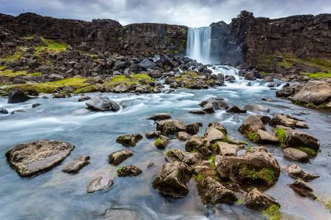
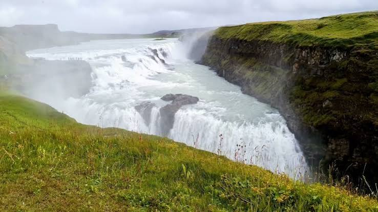
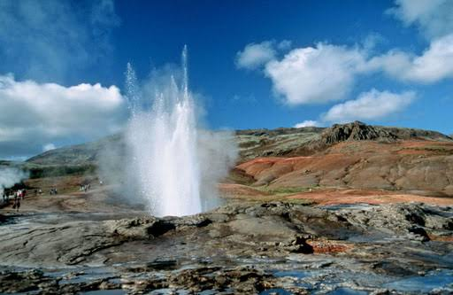
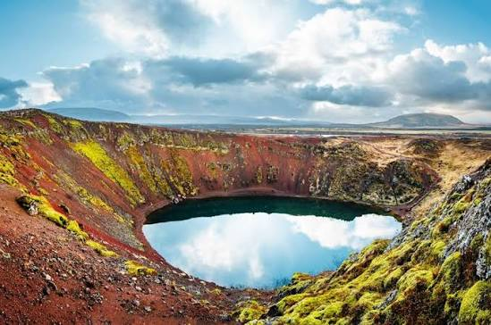

Gljúfrasteinn
 Skoða á Google Maps
Skoða á Google Maps
Þingvellir

Skoða á Google MapsGullfoss

Skoða á Google MapsGeysir

Skoða á Google MapsSkálholt
 Skoða á Google Maps
Skoða á Google Maps
Kerið

Skoða á Google Maps